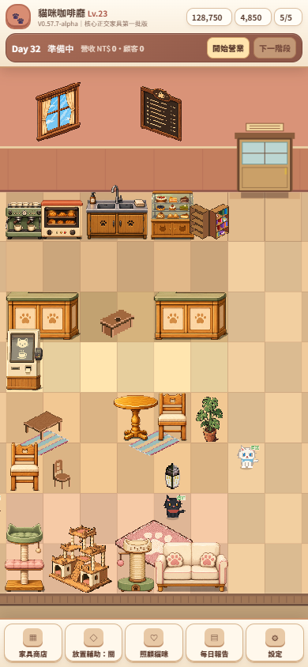
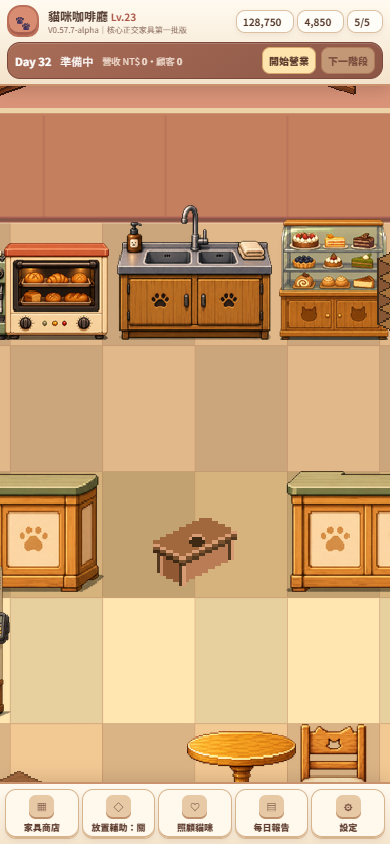
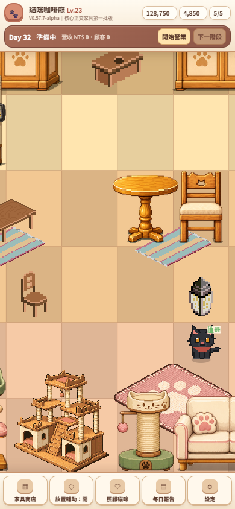
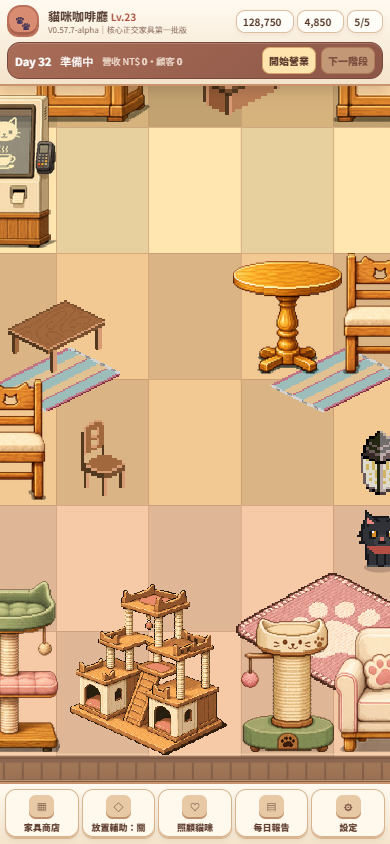
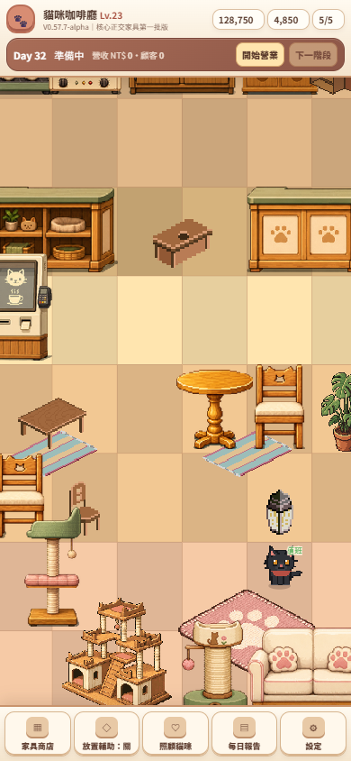
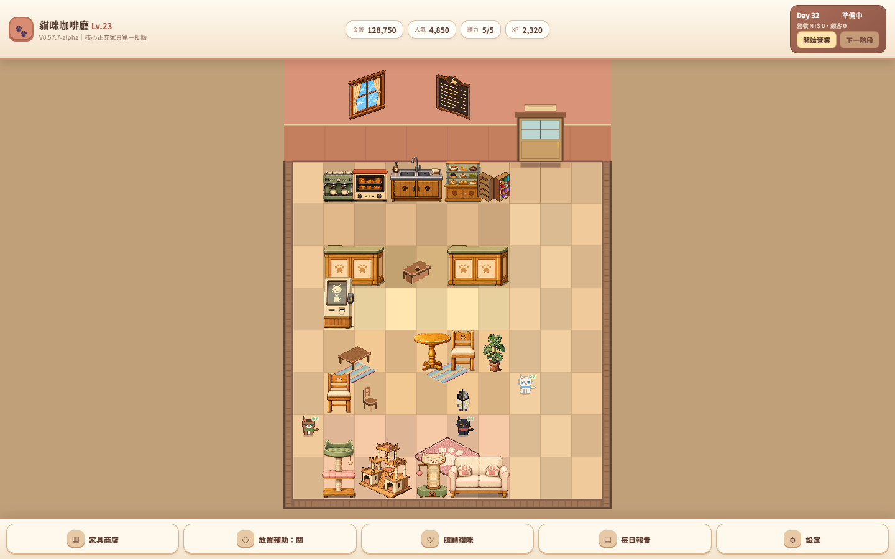

V0.57.7-alpha｜核心正交家具第一批
12 個既有 ID 以 projection-specific override 接入；只有 Orthogonal 使用新 PNG。iso／flat、Camera、Grid、footprint、存檔均保持原契約。







回歸
?projection=iso 仍選用 base visual；
?projection=flat 亦不讀 Orthogonal override。完整指標見
metrics.json。